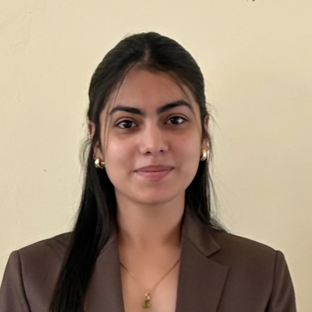

Conyso · we contend.
Certamus
Conyso enters case competitions and hackathons under its own name. These are the ones we reached the final of, and the ones we won: what we argued, and how it went.
We started in September 2026 and have registered for more than fifty since. This page is deliberately shorter than that: a case goes up when we still have the deck we submitted, so what is missing here is paperwork rather than result.
Most recent · Hackathon
DataForge 2026, Pathway track
Pathway · Final round · Finalist
The brief asked for an explainer rather than a product. Pick one frontier idea in machine learning, build something a working engineer can interact with, and make the idea click. Connect it to the host's own architecture. Every claim on the page has to be defe...

Finals and wins
| Date | Competition | Format | Who | Result |
|---|---|---|---|---|
| 19 September 2026 | DataForge 2026, Pathway trackPathway | Hackathon | Krishna Chagti | Finalist Final round |
| 19 September 2026 | Sankriya 11.0Club Kaizen, IBS Hyderabad | Case | Krishna Chagti, Krishay Nayyar, Drishti Soni | Pending Final round |
| 19 September 2026 | Seeking Alpha 2026Findmenon, NMIMS | Case | Krishna Chagti, Krishay Nayyar, Drishti Soni | Finalist Final round |
| September 2026 | People MatrixCHRIST (Deemed to be University), Delhi NCR | Case | Krishna Chagti, Krishay Nayyar, Drishti Soni | Finalist did not contest it |
Two lanes
The argument
Case competitions
A brief, a week or a night, and a deck that has to survive a panel who will push on the weakest number in it. The work is judgement: framing the problem, sizing what the brief leaves out, and being able to defend the ranking.
- Krishna ChagtiCaptain, and the framing
 Krishay NayyarClassification, sizing, cost
Krishay NayyarClassification, sizing, cost
Drishti SoniDelivery, and the close Aksh KansaraDefence in Q&A
Aksh KansaraDefence in Q&A
The build
Hackathons
A different problem entirely. The output is something that runs, so the constraint is scope rather than argument, and it is judged on whether it works rather than on whether it convinces. The split is deliberate: Krishna works through AI heavily, Akshit is hands on.
- Krishna ChagtiCaptain, and the framing
 AkshitThe build
AkshitThe build
The team
- Krishna ChagtiCaptain, and the framing“Say the weakest number out loud, before they find it.”
- Krishay NayyarClassification, sizing, cost“Leadership is a responsibility, not a position.”
- Drishti SoniDelivery, and the close
- Aksh KansaraDefence in Q&A“It's not about how loud you talk; it's about what you build when no one is watching.”
- AkshitThe buildCollaborator
How we work
How this team works a case, and why.
- How we work a caseReduce the list to its causes, set the rule before the analysis, size what the case leaves out, and show the ranking rather than the decimals.
- The first slideRestate the question in one line, and let the answer ride on the restatement. If the reframe is right, the recommendation is already implied.
- Say the weak part firstEvery analysis has a soft spot. Naming it before the judges find it is not modesty, it is the cheapest way to keep the rest of your numbers believable.
- The defenceMost of Q&A should already be answered. We build the likely question list first, fold the answers into the talk, and keep the rest of the defence for what genuinely could not be anticipated.
- Picking the teamMost competitions allow four, so four of us go. When the limit is three it is the three who started this, because rehearsal time compounds and a settled line-up is worth more than an optimised one.
If you are entering one
Practical guides for anyone about to do this for the first time. Written from what has worked for us, not from any organiser's rulebook.
- Your first case competitionWhat actually happens, what the deadline really means, and the three things that separate a team that places from one that submits.
- Sizing what you are not givenMost briefs withhold the number the recommendation depends on. Build it in the open, show the chain, and test whether your ranking survives being wrong.
- Building the deckOne idea per slide, the headline doing the work, and an appendix that exists to be opened in Q&A rather than skipped in the talk.
- What actually losesNot weak analysis. Teams lose by answering a question nobody asked, by hiding the assumption that matters, and by running out of time to rehearse.
- Surviving your first Q&AMost of Q&A is decided before it starts. Build the question list, answer the obvious ones inside the talk, and agree who speaks before anyone is under pressure.
- Choosing what to enterYou cannot enter everything. Pick for the brief you want to get better at, not for the prize, and treat the first round as the real filter.
On the briefs
A competition brief belongs to the organiser who wrote it. Unless a case page says otherwise, the brief on it is restated in our own words and what follows is our own work. Where an organiser has given permission to reproduce theirs, the page says so and names the permission.